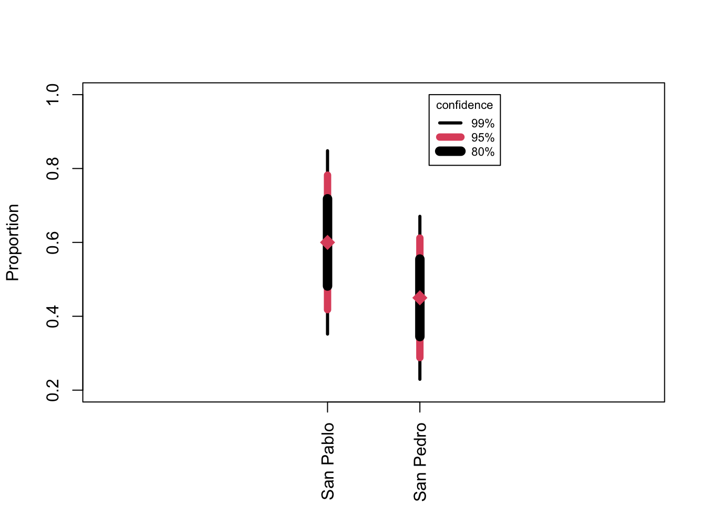

14 Comparing Proportions of Different Samples (Ch. 14)
Begin by creating a table with data from Drennan Table 14.1. Note that we are making a 2x2 matrix, populating it with a vector of numbers, and naming its dimensions (rather than making a data frame, as you’ve probably gotten used to doing).
sherds <- matrix(c(18,12,18,22), nrow=2, ncol=2, byrow=T,
dimnames=list(c("San Pablo", "San Pedro"), c("Bowl", "Jar")))14.1 Comparison with Estimated Proportions and Error Ranges
Making a bullet graph like Fig 14.1 is actually a bit tricky, but we can model one on the bullet graphs that we built using confidence intervals in Ch. 13, and using the calculation of confidence intervals for proportions from Ch.11. Drennan gives us the standard errors: 9% for San Pablo and 8% for San Pedro.
A couple of bits of R syntax to note:
- The vectors that we’ll build to hold the values for different confidence intervals (the proportions ± the standard error * t, for each desired CI) are of the “list” type, so that they can hold three values for each proportion (that is, low/high values for the three CIs for the first proportion in the first element of the list, and then low/high values for the three CIs for the second proportion in the second element of the list). Lists are indexed using
[to call a member of a list and[[to access the elements within a member.
- We’ll populate our two lists (of low CIs and high CIs) by building a
for()loop. This says, in effect: take the first proportion and the first standard error, calculate CIs, and write those to the first element of the list; then repeat this for the second proportion and standard error, and write to the second element. Obviously you could calculate the CIs for each individually, but afor()loop is a good trick if you need to do this, say, ten or a hundred times.
##bullet graph for proportions##
#repurpose the ciDat function for confidence intervals for proportions
ci=c(.99, .95, .80)
seX <- c(.09, .08) #standard error
n <- c(30, 40)
t <- qt((ci+1)/2, df=n-1)
props <- c(.6, .45)
#create empty vectors
lows <- vector("list", 2)
highs <- vector("list", 2)
i <- 1
for (i in 1:2){
lows[[i]] <- props[i] - (seX[i]*t) #lower boundaries
highs[[i]] <- props[i] + (seX[i]*t) #upper boundaries
}
#examine the results; compare:
lows[1]## [[1]]
## [1] 0.3519253 0.4179578 0.4819710## [1] 0.3519253 0.4179578 0.4819710COL <- c(1, 2, 1) #set up colors
LWD <- c(3, 7, 9) #line widths
AT <- c(2, 3) #locations
plot(1.5:3, ylim = c(0.2,1), xlim = c(1.5, 3.5), xaxt="n", ylab="Proportion", xlab="",
main="", asp=4)
segments(AT[1], lows[[1]], y1=highs[[1]], lwd=LWD, col=COL)
segments(AT[2], lows[[2]], y1=highs[[2]], lwd=LWD, col=COL)
points(AT, props, pch=18, cex=2, col=2)
axis(1, at=AT, labels=c("San Pablo", "San Pedro"), las=3)
legend(3.1, 1, legend=c("99%", "95%", "80%"), lwd=LWD, col=COL, title="confidence",
cex=.7)
14.2 Comparison with \(\chi^2\)
You know already how to calculate row and column sums and proportions, and so can produce Table 14.1 and Table 14.2.
sherds_margins <- addmargins(sherds)
#then calculate row proportions, multiplying by 100 to get % and rounding to 1 decimal
sherds_rowprops <- round(prop.table(sherds_margins[,1:2], 1)*100,1); sherds_rowprops ## Bowl Jar
## San Pablo 60.0 40.0
## San Pedro 45.0 55.0
## Sum 51.4 48.6R is happy to calculate chi-squared results for you with chisq.test(). We’ll use that rather than going through the steps of the equation \[\chi^2=\sum\frac{(O_i-E_i)^2}{E_i}\]
but you can easily reproduce the calculations Drennan goes through on p184.
The output skips over all the intermediate steps, but the data from those steps are produced along the way (see the ‘Value’ section of ?chisq.test). We can access those by using the $ operator on the results of chisq.test(). We’ll examine the expected values in order to replicate Table 14.3.
## Bowl Jar
## San Pablo 15.43 14.57
## San Pedro 20.57 19.43#if you want to get cute, replace the upper left 2x2 of sherds_margins with the expected values
table14.3 <- sherds_margins
table14.3[1:2,1:2] <- round(chi_sherd$expected, 2); table14.3## Bowl Jar Sum
## San Pablo 15.43 14.57 30
## San Pedro 20.57 19.43 40
## Sum 36.00 34.00 7014.3 Measures of Strength
Cramer’s V is a measure of the strength of the difference that we detect with a chi-squared test.
sherd_V <- sqrt(chi_sherd$statistic[[1]]/(70)*(2-1)) #[[1]] necessary to avoid name
#or
lsr::cramersV(sherds, correct=F)## [1] 0.1485221As Drennan discusses (p188), Cramer’s V will vary between 0 and 1, with 0 indicating no difference and 1 the largest possible difference.
14.4 The Effect of Sample Size
We can make Table 14.5 just as we did Table 14.1.
sherds_big <- addmargins(matrix(c(72,48,72,88), nrow=2, ncol=2, byrow=T,
dimnames=list(c("San Pablo", "San Pedro"), c("Bowl", "Jar"))))You can calculate \(\chi^2\) and examine the expected values - as well as the chi-squared result - just as we did above. Note that to calculate chi-square, we don’t actually want the marginal totals involved, so we select just the 2x2 table by indexing for the first two rows and first two columns (sherds_big[1:2,1:2]).
sherds_big_nomargins <- sherds_big[1:2, 1:2]
round(chisq.test(sherds_big_nomargins, correct=F)$expected, 2)## Bowl Jar
## San Pablo 61.71 58.29
## San Pedro 82.29 77.71##
## Pearson's Chi-squared test
##
## data: sherds_big_nomargins
## X-squared = 6.1765, df = 1, p-value = 0.01295## [1] 0.148522114.5 Differences between Populations versus Relationships between Variables
Drennan makes two important points in this section:
1. comparing proportions can be construed either as assessing how different two populations are or whether two variables are related.
2. a bullet graph can serve to compare proportions as well as a significance test can (consider the code used to build Fig 14.1, above).
14.6 Assumptions and Robust Methods
Chi-square tests depend on the samples involved being large enough to reliably approximate the population proportions. How large is that? Drennan’s common-sense approach:
no expected value…less than 1 and that no more than 20% of the expected values…less than 5. (Drennan p192)
When we cannot meet the requirements of a chi-square test but would still like to Fisher’s Exact Test \[p=\frac{(A+B)!(C+D)!(A+C)!(B+D)!}{N!A!B!C!D!}\] Where (for a 2x2 table), A, B, C, and D are the observed frequencies in each cell of the table.
In R, you can carry out Fisher’s Exact Test with fisher.test().
##
## Fisher's Exact Test for Count Data
##
## data: sherds
## p-value = 0.2368
## alternative hypothesis: true odds ratio is not equal to 1
## 95 percent confidence interval:
## 0.633985 5.359949
## sample estimates:
## odds ratio
## 1.81734914.7 Comparing Proportions to a Theoretical Expectation
It’s common that we might want to compare proportions not to each other, but to some theoretically (or empirically) derived expectation.
How likely is it that this entire sample of 38 sites came from a population of sites in which there was no preference for locating sites in any particular environmental setting? (Drennan p195)
We can, Drennan goes on, “use the information we have to determine expected numbers of sites in each environmental setting as in Table 14.9.”
Build Table 14.9 by calculating expected proportions based on the proportion of the survey area in each zone.
## Warning in read.table(file = file, header = header, sep = sep, quote = quote, :
## incomplete final line found by readTableHeader on
## 'data/Drennan_datasets/Drennan_2009_Table14.7.csv'colnames(Tab14.7)[3:5] <- c("Percent.Sites","Area.surveyed","Percent.Area.surveyed")
kable(Tab14.7) %>% kableExtra::kable_classic(full_width = F)| Environmental.setting | Number.of.sites | Percent.Sites | Area.surveyed | Percent.Area.surveyed |
|---|---|---|---|---|
| Remnant levees | 19 | 50.0 | 3.9 | 28.7 |
| River bottoms | 12 | 31.6 | 8.3 | 61.0 |
| Slopes | 7 | 18.4 | 1.4 | 10.3 |
| Totals | 38 | 100.0 | 13.6 | 100.0 |
If you want to explicitly recreate Table 14.9, you can assemble it from the elements of Table 14.7.
Tab14.9 <- data.frame(Setting = Tab14.7$Environmental.setting, AreaSurveyed =
Tab14.7$Percent.Area.surveyed, ExpectedSites =
round(38 * (Tab14.7$Percent.Area.surveyed/100),1),
ObservedSites = Tab14.7$Number.of.sites)With Table 14.9 we can perform a chi-square test based on these observed and expected values; now instead of relying on R to calculate expected values for us we need to specify them. We can do that by specifying what to use in the p argument to chisq.test() should be. R will squawk about the \(\chi^2\) results because of the small expected values (see Drennan p191-192), and you would be wise to consider whether the results appear to be plausible.
## Warning in chisq.test(Tab14.9$ObservedSites[1:3], p =
## Tab14.9$AreaSurveyed[1:3]/100, : Chi-squared approximation may be incorrect##
## Chi-squared test for given probabilities
##
## data: Tab14.9$ObservedSites[1:3]
## X-squared = 13.832, df = 2, p-value = 0.000991614.8 Practice
Data for the practice problems can be easily built (below) and loaded from OpSherds.txt.